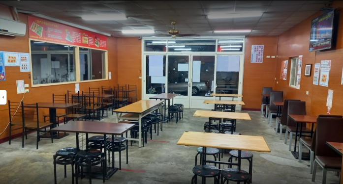
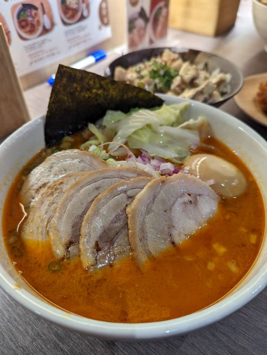
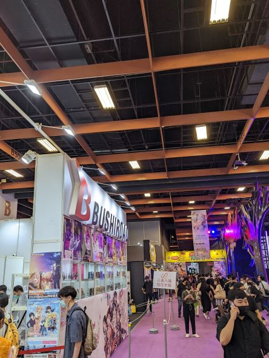
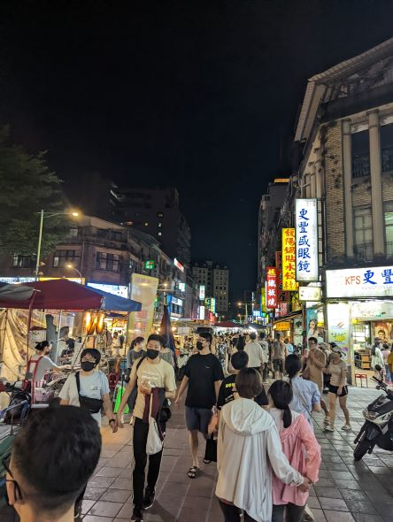
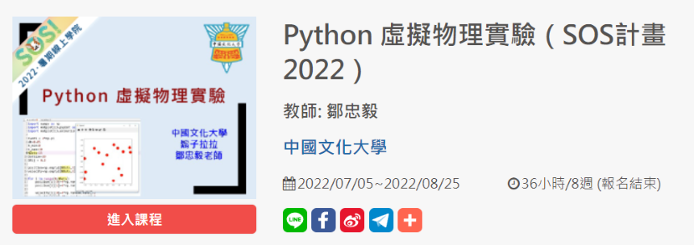
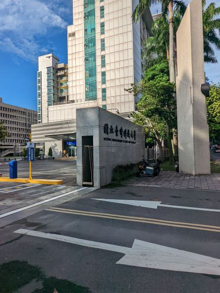
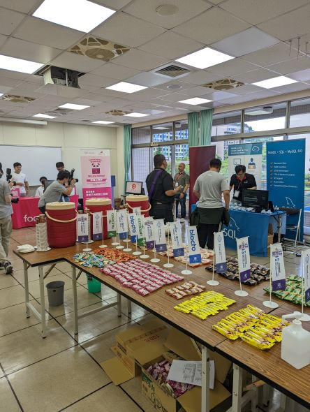
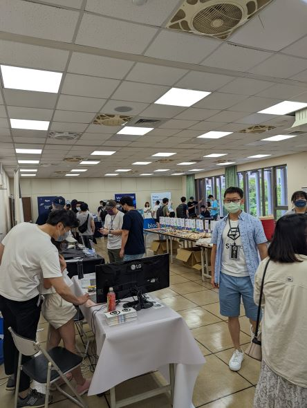

「Eclipse first the rest nowhere」
翁偉哲 Jeff Weng
個人簡介
個性:外向、活潑、喜歡探索自我
職業:學生
學歷:
漢民國小
餐旅國中
高雄中學
中正大學通訊系
喜歡的食物:拉麵、義大利麵
Email:jeff38459416@gmail.com
喜歡的歌手/樂團:
近期看的動畫/卡通:
暑假做了甚麼:日常篇
考汽車駕照
原本就有計畫要趁著大一暑假比較閒的時候就報名中正駕訓班，把汽車駕照考到。
結果因為後面有報到老師的實驗室以及還有許多事要做，所以考駕照的優先度就大幅降低。
甚至前三天才開始看筆試，幸好最後一次就拿到駕照，雖然路考考官都一直放水。
結果我還是低空飛過哈哈，場內外路考分數都70幾分。
不過有考到就好了
打工
原本暑假沒想過要打工的，因為感覺做餐飲業的打工無法應用到本科的領域上。
後來我暑假就感覺行程沒有塞很滿，因為我晚上回去好像也不會讀書哈哈。
就決定上晚上8:30的夜班來體驗打工生活，我是去學校附近的夯極味打工。
老闆跟員工對我都很好，不會因為新人犯甚麼錯就直接斥責，反而是柔性引導。
但是我認為我的適性不適合這方面，也是想讓他們能找到比我能力更好的員工。
所以我就做了大概1個半月這樣子。

出去騷兩圈及休閒
暑假當然也要出去玩，說實在其實我也玩蠻多遊戲的。
不過主要都是晚上打工結束跟我朋友玩遊戲。
還有花蠻多時間幫我重考的朋友分析二類科系的各種出路。
回高雄也是跟很多同學約出來吃個飯，聊個近況，哈拉一下。
我也有自己騎車去成大找我的朋友去那邊借宿。
然後吃台南的食物，再次參觀成大，畢竟是我的夢想學校哈哈，對成大特別有感情。
還有趁去台科大參加COSCUP前去漫博以及遼寧夜市逛逛。
不過最常還是在中正這邊自己煮飯吃，滿省錢的。
以下是我回高雄吃的拉麵、去漫展、夜市的照片。



暑假做了甚麼:學習篇
SOS暑期學院
因為我下學期只有17學分，所以我找到一個以交大為首的SOS暑期課程。
而我是上中國文化大學教授鄒忠毅開的Python虛擬物理實驗。
裡面主要是高中物理的內容搭配Python的程式去體現實驗結果。
除了基本語法他還有教海龜圖跟numpy的應用。
我也是覺得獲益良多啦，還能順便拿到學分 讚。

COSCUP
在思考要如何探索電資方面的方向時，我因緣際會下知道有議程的活動。
在台科舉辦的COSCUP算是一個資訊科技的社群，跟SITCON、MOPCUP、HITCON齊名。
而我跟我同學決定報名他們的工作人員，也是很幸運的錄取了。
議程活動也是非常充實、有國內外的講者、教授分享他的的作品及發現。
且攤販也有國內外的公司、部門，如:Google、Si Five來介紹他們的公司及內容，也能順便取得他們的贈禮。
也能跟其他工作人員交流，有許多人都是出社會工作還來參加活動的。
最重要的是擔任工作人員可以免費享有交通、住宿及飲食，真的是一個非常好的體驗。
讓我原本保持半信半疑的態度整個大轉變，下次有機會一定還要來。



leetcode、競程、實驗室的課程、資結。
因為都是和程式相關所以我想要一起講，重寫完這學期的作業後。
一開始我是競程社團的功課跟實驗室的課程一起併行。
寫完競程的作業後是看資結的ocw跟實驗室的課程一起做。
最後看到tree的時候感覺都沒有實作到所以ocw就先擱著去寫leetcode，目前是一天1~2題。
我覺得我要先全力衝刺把實驗室的作業都作完。
最後再來為下學期作準備，感覺要先讀完資結才應用在leetcode上。